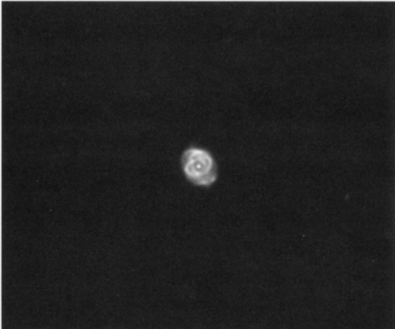

猫眼星云 · Cat's Eye Nebula (NGC 6543)
The Cat's Eye Nebula, catalogued as NGC 6543, is undoubtedly one of the most structurally complex and visually stunning planetary nebulae in our galaxy. Located in the constellation Draco, this celestial wonder has captivated astronomers since its discovery by William Herschel in 1786. What appears as a simple elliptical disk through modest telescopes reveals itself, under the penetrating gaze of the Hubble Space Telescope, as a three-dimensional cosmic jewel box of interlocking shells, jets, and bubbles—a preview of the Sun's own distant fate.
猫眼星云，编号NGC 6543，无疑是银河系中结构最为复杂、外观最为壮丽的行星状星云之一。位于天龙座的这片苍穹瑰宝自1786年被威廉·赫歇尔发现以来，便令无数天文学家为之倾倒。在普通望远镜中看似简单的椭圆盘状结构，在哈勃太空望远镜的穿透性观测下，呈现出由交错壳层、喷流和气泡组成的三维立体结构——这正是太阳遥远未来的预演。
W. HERSCHEL: [Observed 15 February 1786] A planetary nebula. Very bright. Has a disk of about 35" diameter, very ill-defined edge. With long attention a very bright well defined round center becomes visible.
W·赫歇尔： [1786年2月15日观测] 行星状星云。亮度极高。直径约35角秒，边缘极不清晰。经长时间凝视后，可见一个边界分明的明亮圆形核心。
| 参数 Parameters | 数值 Value |
|---|---|
| 类型 Type | 行星状星云 Planetary Nebula |
| 星座 Constellation | 天龙座 Draco |
| 赤经 Right Ascension | 17h58m 33.4s |
| 赤纬 Declination | +66°37' 59" |
| 视星等 Magnitude | 8.1 |
| 视直径 Apparent Size | 23" × 17" |
| 距离 Distance | ~3,000 光年 light-years |
| 发现者 Discoverer | 威廉·赫歇尔 William Herschel, 1786 |
William Herschel is often credited with naming these curious objects "planetary nebulae" in 1785 because their round forms resembled that of the pale green planet (Uranus) he discovered four years earlier. But French astronomer Antoine Darquier de Pellepoix also deserves credit; in 1779 Darquier de Pellepoix discovered the famous Ring Nebula (M57) in Lyra and likened its appearance to a "fading planet." At the time, most observers believed these objects to be masses of unresolved stars rather than gaseous nebulae. The first clue to their true nature came on August 29, 1864, when English amateur astronomer William Huggins turned a spectroscope to NGC 6543—it was the first nebula of its kind to be studied this way. Huggins immediately recognized that the spectrum he saw was that of a luminous gas, not a haze of unresolved suns. Today we know planetary nebulae are indeed thick shells of gas ejected by, and moving out from, the extremely hot cores of dying red-giant stars. Such activity portends the fate of our Sun.
威廉·赫歇尔常被誉为在1785年将这些奇特天体命名为"行星状星云"的学者，因其浑圆形态酷似他四年前发现的淡绿色行星（天王星）的外观。但法国天文学家安托万·达基耶·德佩勒普瓦同样功不可没；1779年他在天琴座发现了著名的环状星云（M57），并将其外观比作"逐渐黯淡的行星"。当时多数观测者认为这些天体是未解析的恒星群，而非气态星云。关于其本质的首个线索出现在1864年8月29日，英国业余天文学家威廉·哈金斯将分光镜对准NGC 6543——这是首个以此种方式被研究的此类星云。哈金斯立即意识到他所观测到的光谱属于发光气体，而非由无数恒星构成的朦胧光晕。如今我们已知，行星状星云实为垂死的红巨星从其炽热核心抛射出的厚密气体壳层，这些气壳正不断向外扩张。此类现象预示着我们太阳的最终命运。
GC/NGC: Planetary nebula, very bright, pretty small in angular size, suddenly brighter in the middle to a very small nucleus.
GC/NGC： 行星状星云，亮度极高，角尺寸相当小，中心区域突然增亮至一个极小的核心。
On January 11, 1995, the Space Telescope Science Institute introduced the Cat's Eye to the public eye. Magazines, newspapers, and calendars soon carried stunning HST images of NGC 6543. Ground-based images merely show the planetary's bright central star seemingly tied in a loose knot of overlapping gas shells. But HST's powerful eye added depth to the scene, revealing a three-dimensional tangle of loops, bubbles, and jets. Apparently the nebula's innermost structure is an oblong bubble of gas blown out at supersonic speeds from what is now suspected to be a binary central star; the ends of this bubble seem to have burst open.
1995年1月11日，空间望远镜科学研究所将猫眼星云（NGC 6543）首次呈现在公众视野。各大杂志、报纸和日历迅速刊载了哈勃太空望远镜拍摄的震撼图像。地面望远镜图像仅显现出其明亮中央恒星被包裹在交错气体壳层形成的松散结状结构中。然而哈勃的强大观测能力揭示了更深层的三维景象——由环状结构、气泡状结构和喷流组成的复杂缠结。显然，星云的最内层结构是一个以超音速从中央双星系统抛出的长圆形气体泡；据推测这个双星系统至今仍在活动，而这个气泡的两端似乎已经爆裂敞开。

The elongated central bubble resides within two larger lobes of gas blown off the star during an earlier ejection phase. These outer lobes are "pinched" by a clumpy ring of dense gas that presumably was ejected along the orbital plane of the central binary star. The HST images also reveal jets of gas shooting out of opposite ends of the nebula at right angles to the equatorial ring. Those jets are fleeing the region at speeds of 25 km per second or more, colliding with the gas ahead of them and creating the bright arcs visible near the outer edges of the lobes. The jets themselves may be wobbling and turning on and off episodically, adding further complexity to these interpretations.
它位于恒星在早期抛射阶段喷出的两个较大气体瓣内。这些外部气瓣被一团致密气体组成的团块环所"挤压"，据推测这些气体是沿着中央双星系统的轨道平面抛射出来的。哈勃太空望远镜拍摄的图像还揭示了从星云两端垂直喷出的气体喷流，方向与赤道环带垂直。这些喷流以每秒25公里甚至更高的速度逃离该区域，与前方气体碰撞后在瓣状结构外缘形成明亮的弧光。喷流本身可能存在周期性摆动和间歇启停现象，这进一步增加了结构解析的复杂性。